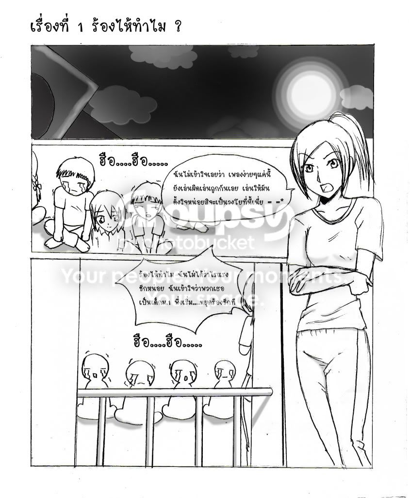
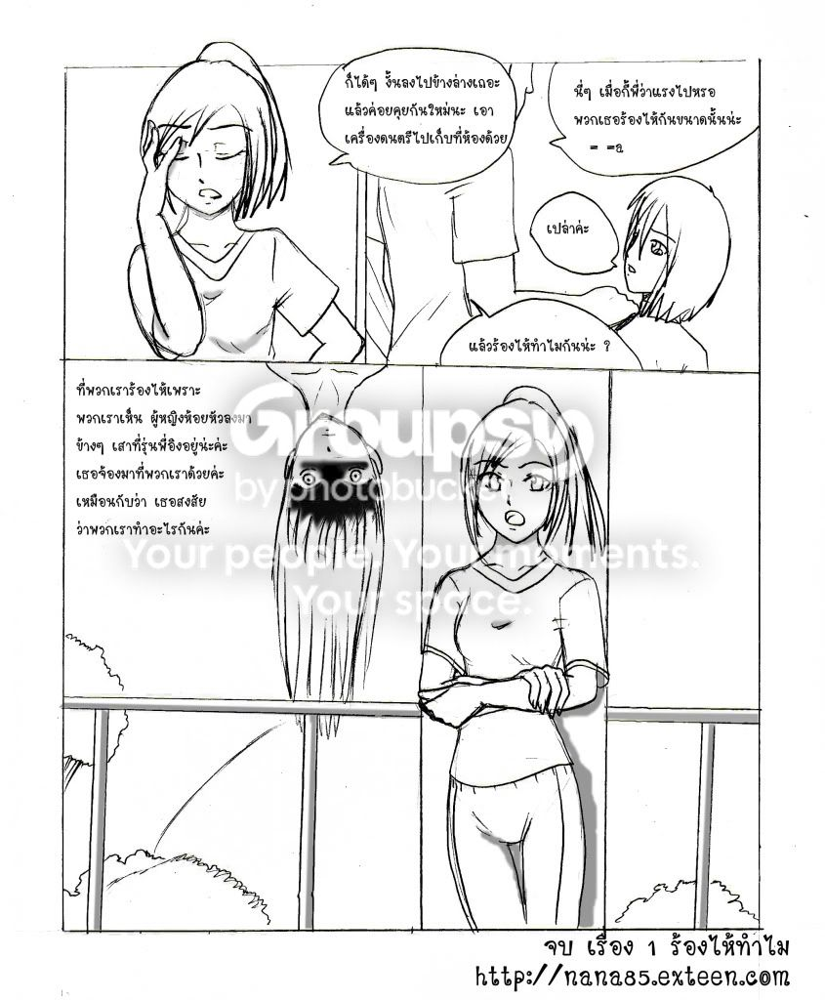

ขอบพระคุณที่ติกับผลงานเก่าของข้าน้อย ซึ่งไม่ค่อยได้เรื่องเท่าไรเนอะ
ช่วงนี้รู้สึกจากไม่ได้เข้าบอร์ดอีกนานเพราะว่างานเยอะมาก
ทั้งเรื่อง GATPAT งานโรงเรียนที่เข้ามาจนแทบจะไม่ค่อยมีเวลาเท่าไร
กลายเป็นว่าเราหายไปจากโลก ECO เลยซะงั้นเพราะการ์ตูนที่จะวาด ก็ไม่ได้วาดซักที
แต่ดันว่างที่จะวาดเรื่องอื่นๆซะงั้น ทุกคำแนะนำข้าน้อยจะจำไว้ไปปรับปรุงนะค่ะ
ถึงจะปรับปรุงช้านะค่ะ เอาล่ะจะลองนอกเรื่องดูนะค่ะ
เอาล่ะค่ะ เมื่อไม่นานมานี้ข้าน้อยได้ฟังเรื่องสยองขวัญของโรงเรียน
(ฉันเชื่อว่าทุกโรงเรียนต้องมีแน่ๆค่ะ)
โรงเรรียนของข้าน้อยนั้นอยู่ที่เชียงใหม่ค่ะ (แน่ล่ะ) เป็นโรงเรียนที่กว้างใหญ่พอควร
แล้วข้าน้อยก็อยู่มา 5 ปีแล้ว แต่กลับได้ฟังเรื่องราวพวกนี้จากเพื่อนที่มาอยู่โรงเรียนนี้แค่ 1 ปีเอง

ไม่ใช่ว่าข้าน้อยไม่รู้แต่ข้าน้อยรู้มาบ้าง และค่อนข้างสนใจมากด้วย
ส่วนใหญ่จะเกิดกับพวกวงโย (พวกดุริยางค์) เพราะพวกนี้อยู่โรงเรียนทุกวันและกลับบ้านดึกด้วย
อย่างเรื่องที่ทุกเช้าและเย็นพวกวงโย มักจะวิ่งรอบโรงเรียนวันล่ะหลายๆรอบ(ข้าน้อยสองรอบก็จะตายแล้ว =[]=)
และยังวิ่งตอน 3 ทุ่ม แต่คราวนี้พวกเค้าต้องวิ่งสวนทางเดิมที่ตนวิ่งตอนเช้าและเย็น
เพราะเชื่อว่าถ้าวิ่งสวนทางเดิมจะไม่เจอผี แต่ว่าพวกนี้ยังไงก็เจอทุกคน
เราเลยลองเอา 1 ในเรื่องที่เล่ามามาวาดเป็นการ์ตูน (ดูไม่สยองเท่าไรนะ)


คือสรุปว่า พวกรุ่นน้องที่นั่งด่าเห็นหมดยกเว้นรุ่นพี่ที่หันหลังเลยมองไม่เห็น (ถ้าเห็นคงสยองแน่)
อยากรู้เรื่องราวสยองจากโรงเรียนพวกท่านบ้างจัง ถ้ามีก็พิมพ์เล่าสู่กันฟังมั้งนะค่ะ ^ ^
ไงข้าน้อยก็มีคำขอเดิมคือช่วยติเรื่งลายเส้นหน่อยนะค่ะ (รู้สึกว่ายิ่งวาดยิ่งแย่ หรือเพราะเราไมค่อยฝีมือตกเนี่ย

)
ขอขอบพระคุณทุกคำแนะนำด้วยค่ะ